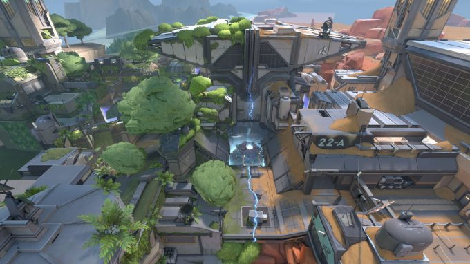
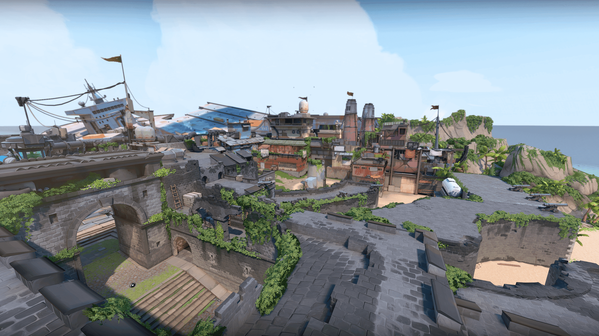
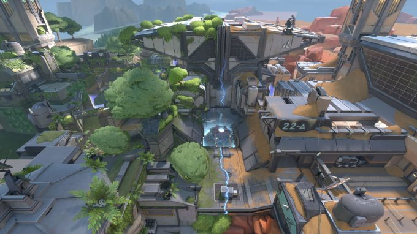
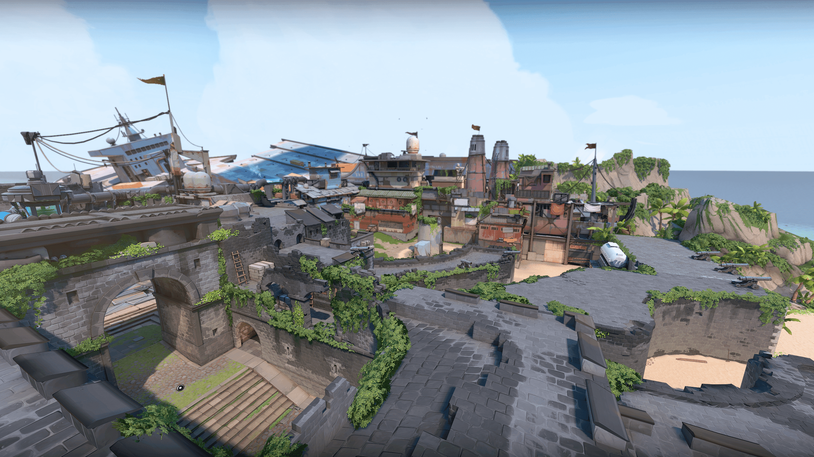
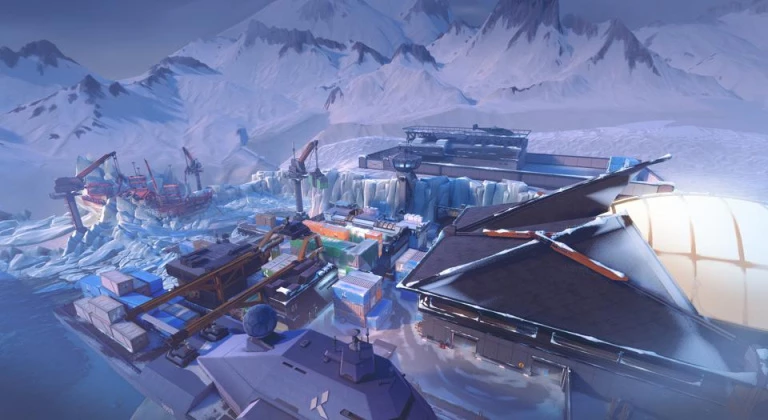
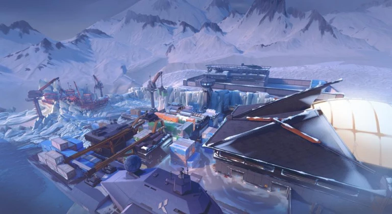

Fait par Tanguy Gilson
Accueil
Les armes
Les agents
Les maps

 



 


Map Ascent
Map Bind
Map Fracture
Map Breeze
Map Haven
Map Icebox
Map Split
Caractéristiques :
La map Ascent a été ajoutée au patch 1.00. Elle
présente 2 spots de Spike séparés par de longs
couloirs et une place centrale ouverte. Certains
accès peuvent être restreint par des rideaux de
fer déployés par les défenseurs. La map met en
avant la verticalité; en faveur des Défenseurs sur
le site A, en faveur des Attaquants sur le site B.
Caractéristiques :
Bind est une map qui dispose de deux site de
Spike. Le premier, en A, est une zone découverte,
protégée par de nombreuses caisses en bois et une
fenêtre en hauteur, propice à la défense au sniper.
Le second, en B, se situe sous un tunnel métallique,
difficilement accessible. Sa particularité réside
dans ses téléporteurs, qui permettent de traverser
la map de long en large et tenter de prendre par
surprise son adversaire.
Caractéristiques :
Il s’agit d’une map originale, où les défenseurs
sont cernés par les attaquants. Les points A et B
sont particulièrement difficiles à défendre, du
fait que les assauts peuvent venir de toute part
et que les sites ne proposent ni couverture, ni
issue de secours. Cette map fait la part belle
aux affrontement à courte et moyenne portée.
Les Agents capables de verrouiller une zone ou
un accès y sont particulièrement efficaces.
Caractéristiques :
Il s’agit d’une map aux multiples zones ouvertes,
avec de nombreux embranchements dans ses
couloirs. Elle possède deux sites de Spike : l’un est
légèrement surélevé, l’autre est légèrement en
contre-bas. Les deux sites proposent relativement
peu d’abris pour les combats, les Agents vont donc
devoir utiliser leurs compétences pour se frayer
un chemin d’un endroit à un autre.
Caractéristiques :
Haven est une map très particulière, puisqu’elle
dispose de 3 sites pour la spike : A, B et C.
Les défenseurs ont alors de nombreux points
stratégiques à couvrir face aux attaquants,
et doivent intelligemment répartir les ressources
sur l’ensemble du terrain. Disposant de nombreux
recoins et de portes d’entrées vers les sites,
Haven est une map parfaite pour apprendre à
maîtriser ses déplacements et créer des
stratégiques innovantes.
Caractéristiques :
Il s’agit d’une map très ouverte et verticale,
où le combat a longue distance y est roi. Elle
possède deux sites de Spike aux styles
radicalement opposés. Le site A est en intérieur
et plutôt claustrophobique tandis que le site B
est ouvert et en extérieur.
Caractéristiques :
Split est une grande carte qui possède deux sites
de Spike, assez éloignés l’un de l’autre. Elle
est certainement l’un des plus difficile à maîtriser,
puisqu’elle nécessite une bonne connaissance des
lieux. Les défenseurs sont mis à rude épreuve
sur Split, puisqu’en cas de mauvais choix ou de
défaite sur l’un des spots, le reste de l’équipe
doit effectuer un long trajet. Heureusement pour eux,
il reste difficile de percer les défenses dans un
premier temps, puisque les espaces de la map sont
propices à retenir les assauts.